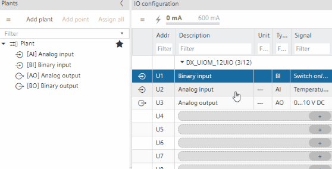

Duplicating I/O and Modbus objects
Use the context menu to easily create copies of existing objects in Engineering > I/O configuration and Engineering > Modbus.

You can create copies of the following objects.
- Devices
- Plants
- TX/IO data points
- Modbus data points
Example: Duplicate an I/O data point in the I/O configuration task
- An I/O data point is existing in the project.
- Go to Building > Building structure.
- Right-click an automation station and select Go to engineering.
- Open the I/O configuration task.
- Right-click an I/O data point and select Duplicate.
- An I/O data point is added to the plant.

The I/O data point is created but not automatically assigned.